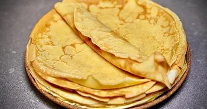

Recette de Crêpes
Ingrédients :
- 250 g de farine de blé
- 4 oeufs frais (bio de préférence)
- 450 ml de lait légèrement tiède
- 2 c. à soupe de rhum ambré ou de fleur d'oranger, ou 1/2 verre de bière blonde
- 1 c. à soupe d' extrait de vanille ou 1 sachet de sucre vanillé
- 2 c. à soupe de sucre
- 1 pincée de sel
- 50 g de beurre fondu (+ beurre pour la poêle)
Préparation~5 min :
- Faites fondre le beurre au micro-ondes et faites légèrement chauffer le lait qui doit être à peine tiède (ça évite les grumeaux)
- Mélangez la farine tamisée, le sucre, le sel dans un grand bol. Vous pouvez remplacer 50 g de farine par la fécule de maïs pour plus de légèreté
- Ajoutez les oeufs, le beurre fondu, puis progressivement le lait, en battant avec un fouet bien pour éviter la formation des grumeaux
- Ajoutez la bière ou le rhum, ou encore l'eau de fleur d'oranger, la vanille et laissez reposer 30 minutes avant d'attaquer la cuisson
- Faîtes chauffer une noix de beurre dans la poêle et disposez une louche de pâte
- Faites cuire vos crêpes de chaque côté, qu'elles soient bien dorées
- Au fur et à mesure, réservez dans une assiette en couvrant avec une feuille de papier aluminium pour les garder chaudes et moelleuse.
- Vous devriez obtenir entre 15 et 20 crêpes avec une poêle de 20 cm de diamètre.
Link:
source de la recetteAvis :
⭐️⭐️⭐️⭐️⭐️ - "Délicieuse recette, facile à suivre !"
⭐️⭐️⭐️⭐️☆ - "Très bon, j'ai ajouté un peu de vanille pour plus de saveur."
⭐️⭐️⭐️⭐️⭐️ - "Un classique à refaire encore et encore !"